在Windows中的身份认证方式有很多，也在不断的升级，但是在域中，依旧使用的是Kerberos认证。
Kerberos 是一种网络认证协议，它的实现不依赖于主机操作系统的认证，无需基于主机地址的信任，不要求网络上所有主机的物理安全，并假定网络上传送的数据包可以被任意地读取、修改和插入数据，也就是说它的认证完全是从一个不安全的网络环境出发进行认证的，它是拥有第三方信托机构的，与上一篇主机间的交互是不同的。
Kerberos 这个名字来源于希腊神话，是冥界守护神兽的名字
其实看到这张图后，也就能明白Kerberos认证的是由三方来完成的，他们分别是client、server、KDC(Key Distribution Center)。
其中KDC是由两种服务所构成的，AS(Authentication Service)和TGS(Ticket Granting Service)
AS是用来为client生成TGT的，TGS是用来为client生成某个服务的Ticket的，TGT(Ticket Granting Ticket)是用来获取Ticket的临时凭证，Ticket是用来访问某种服务所必须使用的票据
只有用户TGT才能获取Ticket，才能去访问server上的服务。
而在Windows当中，域控DC(Domain Controller)充当了KDC的角色，还有一点需要注意的是，它有一个类似于本地SAM一样的数据库AD(Account Database)，里面存储着所有client的名单，只有存在于client中的用户才能申请到TGT。
从物理层面看，AD与KDC均为域控制器DC(Domain Controller)。
域认证的大致流程是这样的：
** client先向DC请求，要求获取访问server的权限，当DC接收到请求之后，先由AS向AD发起请求，查看此client是否在白名单中，成功后，则由AS将TGT返回给client。
** 然后client带着TGT继续向DC发起请求，要求获取访问server的权限，当DC接收到请求后，TGS会通过TGT判断此client是否有获取server服务的权限，成功后，则将Ticket返回给client。
** 然后client凭借Ticket去访问所请求的server，这个Ticket只对该server有效，如果要访问其他server，需要重新申请。
结合下面的图片，分析大致流程效果更佳，文章最后有用通俗的语言解释过程的。
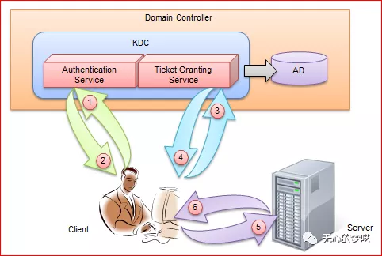
接下来我们走一遍完整的数据请求流程
先说一下这次实验中所使用的机器
DC 192.168.5.130
Client 192.168.5.238
计算机名：SECQUAN_WIN7-PC
域用户：win7
Server 192.168.5.239
计算机名：SECQUAN_WIN7
域用户：win71以下的讲解中的Kerberos数据包是通过网络共享服务来抓取的
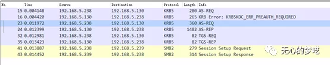
首先，我们来看第一步的流程
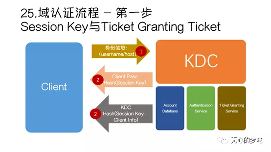
Client发送自己的身份信息给KDC，KDC验证成功后，会在本地生成一个随机字符串session key，然后返回给client两个信息。
** 一个是由client提供的用户名所对应的NTLM hash对session key进行加密后得到的，那么为什么KDC可以用client用户的NTLM hash来进行加密呢，在AD中储存了所有域用户的账号密码等信息，当client发送过身份信息之后，AS会先向AD请求，询问是否有此用户，如果有的话，就会取出它的NTLM hash，然后对所生成的session key进行加密然后作为返回数据包中的一个内容。
** 另一个就是KDC中的一个特定用户的NTLM hash对session key和client所发送的用户信息进行加密后得到的，其中这个特定用户就是krbtgt（krbtgt是在创建域控的时候自动生成的，并且由系统给他随机分配一个密码）；这个加密数据的内容其实就是后面请求中所使用的TGT。
- 这两个中间所用到的session key是相同的。
接下来再详细理一遍每一个请求所传输的具体内容
先看一下client发送身份信息的时候，都传输了哪些内容
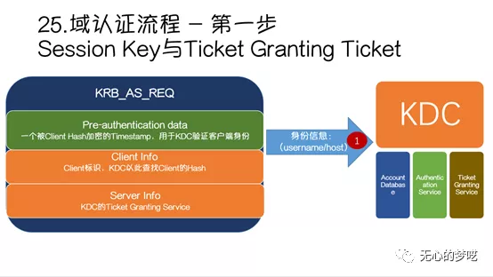
他发送一个KRB_AS_REQ的一个请求，包含了被client加密的timestamp，还有自己的名字等信息，还有请求域时候的服务器信息
我们来看一下他中间所有的数据包
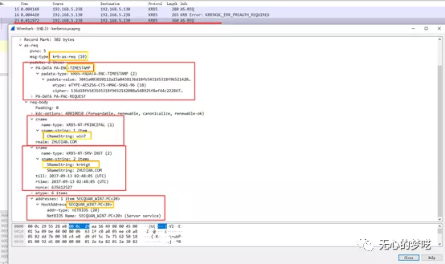
当KDC验证成功后，给client返回一个KRB_AS_REP的请求，它所包含的详细内容是这样的
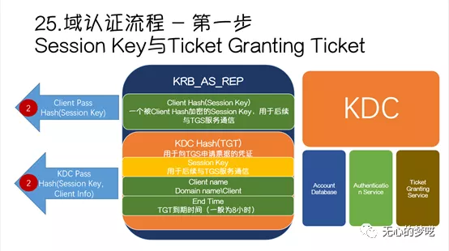
再从数据包中对应一下
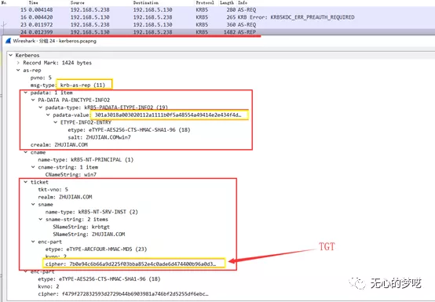
到这里为止，Kerberos请求的第一步过程就结束了，此时已经获取到了所需要的TGT，接下来就是通过TGT来请求ticket。
** 这里还有一点需要注意的是，返回的两个内容，第一个client hash，client可以通过自己的NTLM hash解密，得到其中的session key，但是client是没有KDC的hash，也就是client不知道krbtgt用户的密码，是无法得到TGT中的具体内容的，我们可以使用前面得到的session key继续和TGS进行通信。
接下来我们来看一下第二步的协议流程
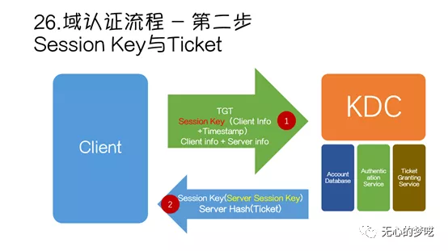
首先他会传输之前所获得到的TGT，然后还有前面通过自己的NTLM hash解密出来的session key，来加密client的信息和timestamp，还有client和server的信息，client将这三块信息一同发送给TGS。
等到TGS接收到前面所传输的信息后，因为TGS本身也属于KDC的一部分，它是拥有krbtgt用户的NTLM hash的，可以对所传输的TGT进行解密，为什么要先解密TGT呢，因为TGS本身是没有session key的，不能对client中所加密的其他信息进行一个认证，而TGT中是存在session key的，TGS通过解密TGT便可以获得传输中的session key，最后便通过session key来解密client所加密的内容，从中获取到时间戳timestamp，如果时间戳跟当前时间相差太久的话，认证就需要重新再来，重复第一步中的操作，重新去请求TGT（因为Kerberos在设计的时候，就假设是处于一个不安全的环境中的，是假设它中间存在中间人攻击的，所以依靠时间戳来限制）。
从中还能获取到client的信息，TGS还会将这个client的信息与TGT中的client信息进行比较，如果两个相等的话，还会继续判断此client有没有权限访问server，如果都没有问题的话，就认证成功，返回ticket给client。
在这次传输的时候，里面是包含有两个信息的
- 首先它会在本地
再生成一个随机字符server session key，使用之前的session key将新生成的server session key加密得到第一个字符串，这里的server session key主要用于后面在client与server的认证过程中的。 - 第二个内容就是ticket了，KDC先会通过前面所得到的server的信息，在AD中找到所对应的NTLM hash，然后通过这个NTLM hash去加密ticket，最后一并返回到client。
在给到client以后，client拥有session key的，所以可以解密得到server session key，但是服务端没有server hash，所以是无法解密得到ticket的。
Ticket中所包含的内容主要有以下几个
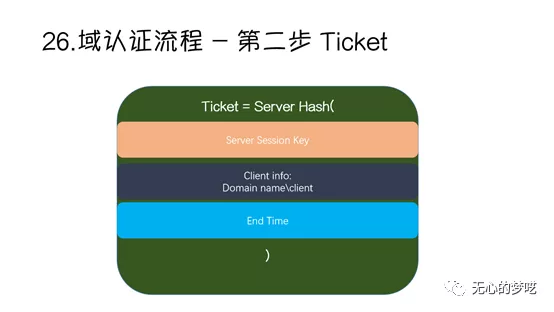
我们再在数据包中看一下所有的流程
先有client发起krb-tgs-req的一个请求
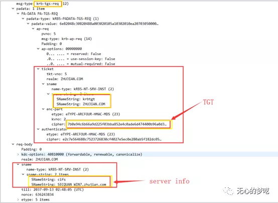
当TGS处理完以后，回复了krb-tgs-rep数据包
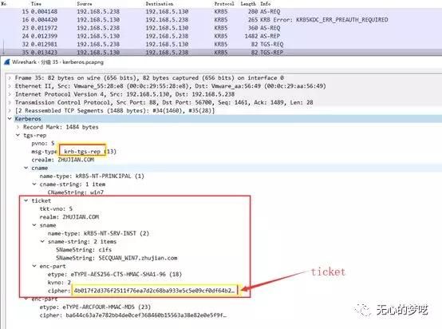
到这里为止，与KDC的通信就结束了，接下来是拿着ticket与server进行通信
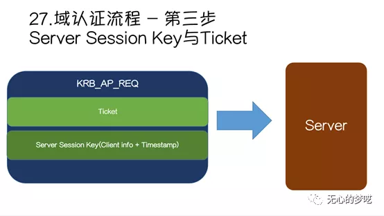
Client向server发送一个krb-ap-req请求，其中第一块就是ticket，因为client是不能对其进行解密的。然后第二个内容就是解密出来的server session key，通过解密出来的server session key加密client信息和时间戳，最后一并发送到server。
Server在收到数据包之后，使用自己的hash将ticket解密，从中获得server session key，然后将krb-ap-req中的client信息和时间戳解密出来，然后与ticket中的client信息进行比对，将这里的时间戳与ticket中的end time进行比较，如果超过了这个时间，就代表ticket已经失效了，需要重新进行认证。
其实在整个Kerberos认证流程中，TGT和ticket的结构都是一样的，唯一不同的就是TGT中是session key，ticket中是server session key，session key是由AS给client的，server session key是由TGS给client的。
以下是两个交互的数据包
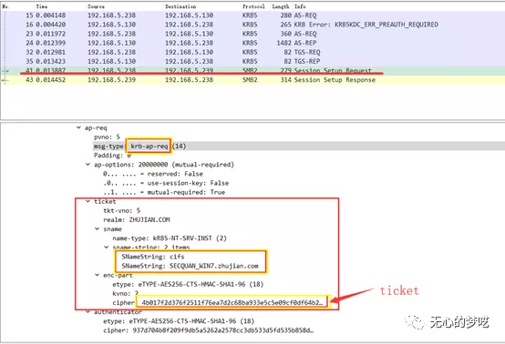
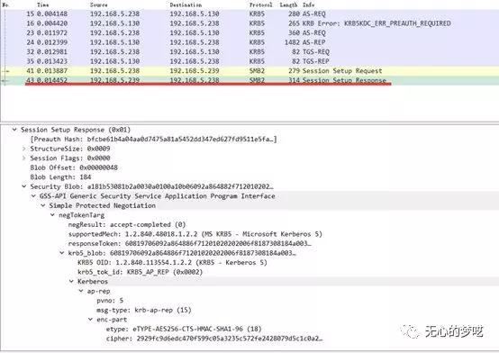
其实整个Kerberos认证的流程就是不断交换密钥，使用对称加密算法，解密验证身份和时间戳，最后达到认证的效果。
最后使用比较通俗的话来给大家解释一下
比如你要去坐飞机，首先你去购买机票，对方（AS）肯定会先验证你的身份（client info），验证通过后，把机票（TGT）给你，然后在登机的时候，检票人员（TGS）会验证你的机票（TGT），然后告诉你飞机位置（ticket），之后你就可以带着ticket去相应的位置了。
文章首发公众号：无心的梦呓(wuxinmengyi)
这是一个记录红队学习、信安笔记，个人成长的公众号
扫码关注即可